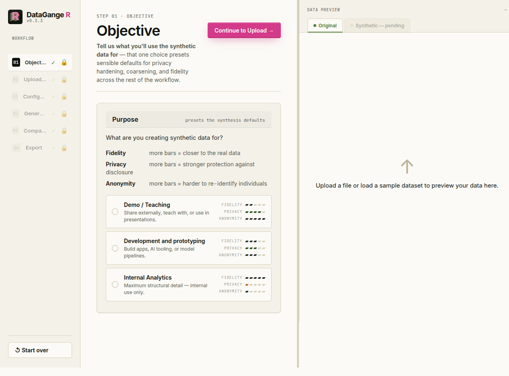
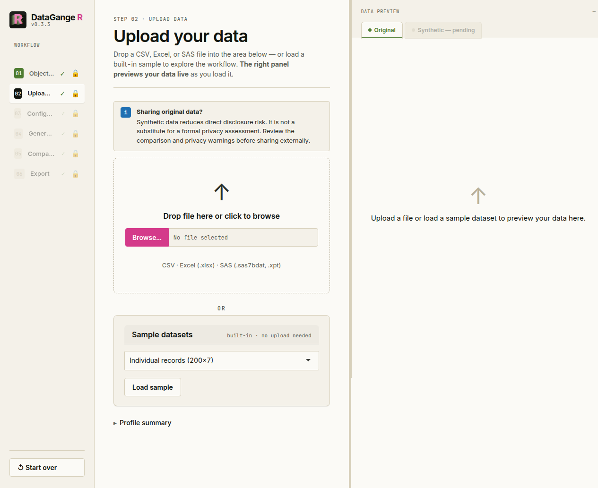

The DataGangeR Shiny app guides you from a real dataset to a shareable synthetic double in six steps. Launch it with:
Every screen mirrors a plain function call, so anything you do here you can also script from the R console (see Use it from R in the README).
1. Objective
Start by telling DataGangeR what the synthetic data is for. The objective — Demo / Teaching, Development and prototyping, or Internal Analytics — presets sensible defaults for fidelity, privacy hardening, and coarsening across the rest of the workflow.

2. Upload
Drop in a CSV, Excel, or SAS file — or load one of the built-in sample datasets to explore the workflow without any real data. The right-hand panel previews your data live as it loads.

3. Configure
Review each column’s disclosure role (direct identifier, quasi-identifier, sensitive, or none) and adjust synthesis settings only if you need to. Defaults are safe for the objective you picked. Every column must carry an explicit role before you can generate — uncertain columns are left unselected on purpose.

4. Generate
Generate the synthetic double. The summary reports row and column counts, the engine used, and the elapsed time; the right panel switches to preview the synthetic records.

5. Compare
Inspect how faithfully the synthetic data mirrors the original. Pick any variable to see overlaid distributions (green is your original data, magenta is synthetic), a Q–Q plot, and a side-by-side statistics table with the delta between them.

6. Export
Download a single bundle containing the synthetic data, a data dictionary, the synthesis spec, a manifest, a comparison report, and diagnostic files — ready to share with collaborators or AI programming tools.

Remember: synthetic data reduces direct disclosure risk; it does not replace a formal privacy assessment. Review the comparison and privacy warnings before sharing any output externally.